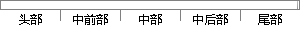

不可否认，专家具有权威性，但是企业客户，特别是那些潜在流失的客户，其观点也具有一定的代表性。
片段位置图

相似结果|
相似片段 1：。目前从这一视角出发的研究不多。同时，客户流失原因评估研究的重点集中于利用专家的专业领域知识对流失原因进行评估。不可否认，专家具有权威性，但是企业客户，特别是那些潜在流失的客户，其观点也具有一定的代表性
|
※ 片段修改建议 ※
近似词参考：- 具有：具备 拥有
- 但是：可是 然则 然而
- 潜在：潜伏
- 观点：概念 看法
- 具有：具备 拥有
- 一定：必然 肯定 必定
系统自动生成语句：不可否认，专家具备权威性，可是企业客户，特别是那些潜伏流失的客户，其概念也具备必然的代表性。
注：本片段修改建议为系统自动生成，仅供参考。